Curso técnico
A partir de 800 horas, para estudantes do ensino médio da rede pública e para quem já concluiu. Dá diploma de técnico, válido em todo o país.
Ex.: Técnico em Informática, em Edificações
Cursos gratuitos de qualificação do governo federal para estudantes, trabalhadores e mulheres. No RN, a rede estadual executa o Mulheres Mil desde 2024.
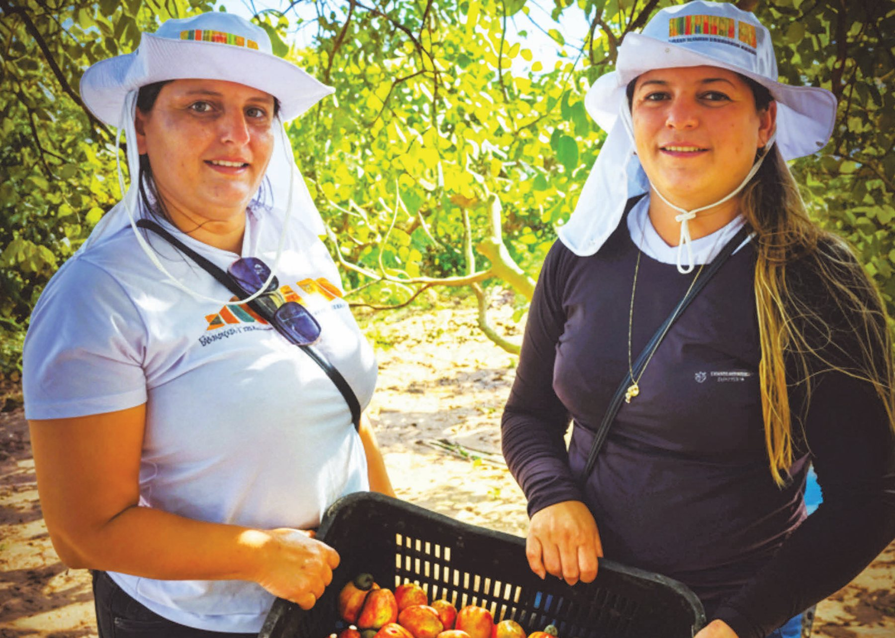
Os três andam juntos: o Pronatec é o programa, a Bolsa-Formação é a forma de pagar os cursos, e o Mulheres Mil é uma linha da Bolsa-Formação feita para mulheres.
O Programa Nacional de Acesso ao Ensino Técnico e Emprego foi criado pela Lei nº 12.513, de 2011, para ampliar, interiorizar e democratizar a educação profissional no Brasil. É voltado a estudantes do ensino médio da rede pública, inclusive da EJA, a trabalhadores e a pessoas atendidas por programas sociais, com prioridade para pessoas com deficiência.
Os cursos são dados pelos institutos federais, pelas redes estaduais e municipais e pelo Sistema S (Senai, Senac, Senar e Senat). Não há uma inscrição nacional única: cada instituição abre suas vagas por edital próprio. O programa atua em quatro frentes:
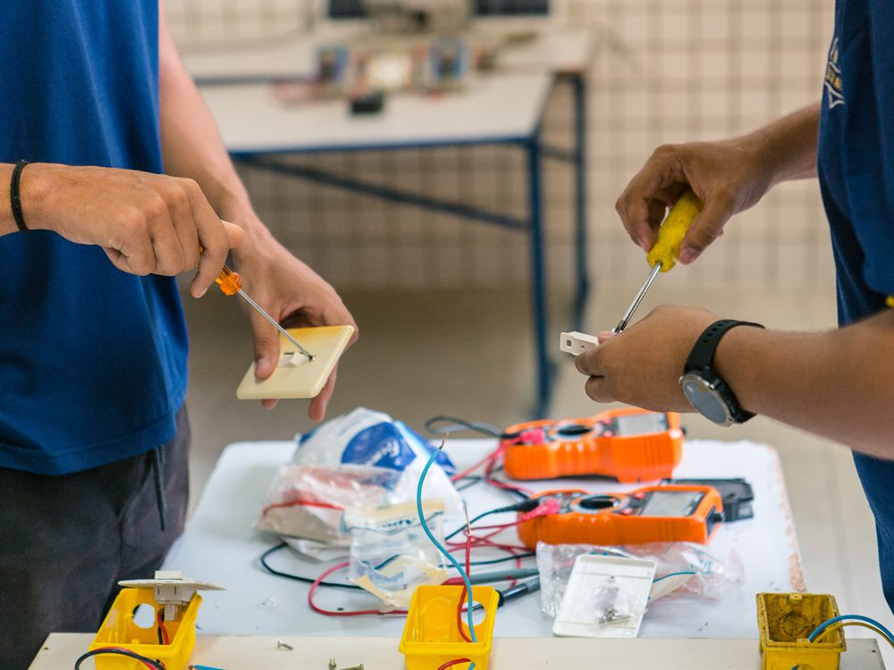
É a principal ação do Pronatec e a que chega direto ao estudante. O MEC repassa à instituição o valor de cada vaga, que cobre as aulas e o material e pode incluir alimentação e transporte. Para o aluno, o curso é totalmente gratuito.
As vagas são planejadas com secretarias e órgãos parceiros, de acordo com a necessidade de cada região e do mundo do trabalho. Há dois tipos de curso:
A partir de 800 horas, para estudantes do ensino médio da rede pública e para quem já concluiu. Dá diploma de técnico, válido em todo o país.
Ex.: Técnico em Informática, em Edificações
A partir de 160 horas, para trabalhadores e pessoas atendidas por programas sociais. Dá certificado de qualificação profissional.
Ex.: horticultor orgânico, eletricista predial
Fonte: Lei nº 12.513/2011 e Portaria MEC nº 817/2015.
Cursos gratuitos de qualificação profissional para mulheres em situação de vulnerabilidade social, com acolhimento e apoio para que cada uma conclua a formação.
O programa nasceu de uma cooperação entre o Brasil e o Canadá e virou programa nacional do MEC em 2011. Hoje faz parte da Bolsa-Formação. O que o diferencia é o cuidado com a permanência: as aulas partem da história de vida de cada aluna e unem a profissão a temas como cidadania, autoestima e direitos da mulher. No Rio Grande do Norte, a Secretaria de Educação oferece o Mulheres Mil pela SUEP desde 2024.
Mulheres a partir de 16 anos, em situação de vulnerabilidade. Têm prioridade:
No RN, a rede estadual executa o programa desde 2024, com as prefeituras. As turmas vão aonde há potencial de trabalho, com preferência para comunidades rurais, indígenas e quilombolas.
Cada curso tem 192 horas. No último ciclo, de dezembro de 2025 a março de 2026, 858 mulheres se formaram em 19 turmas.
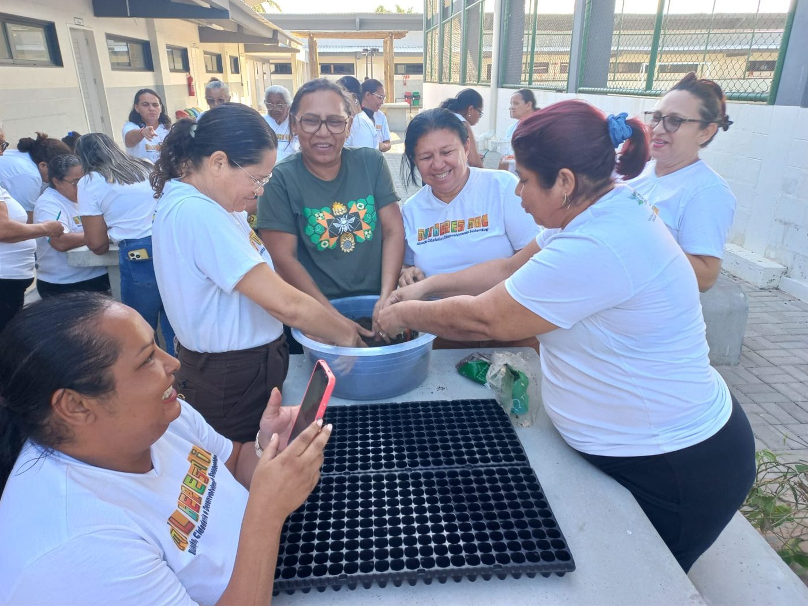
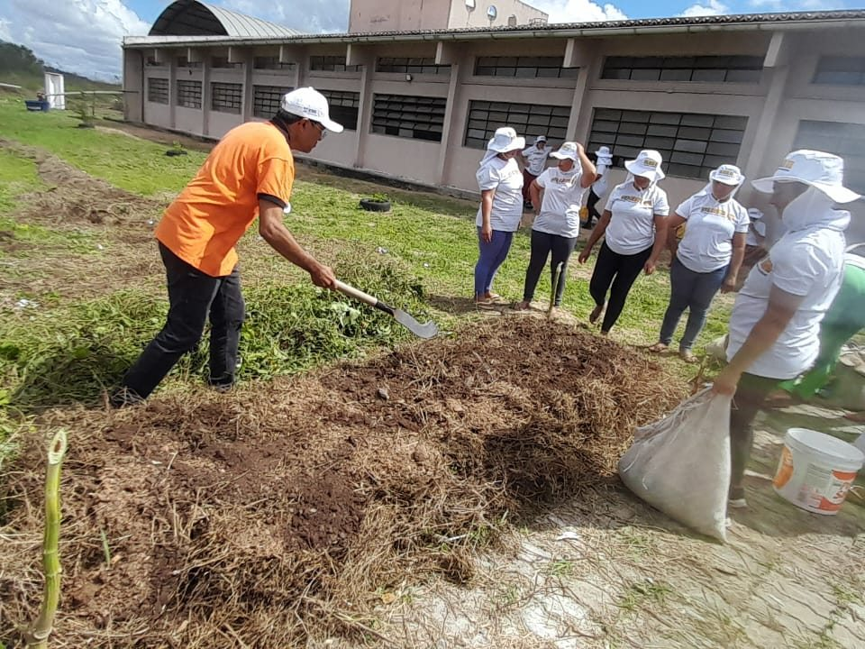
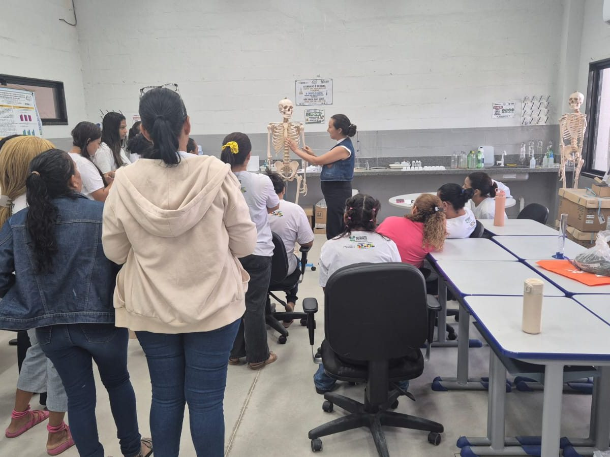
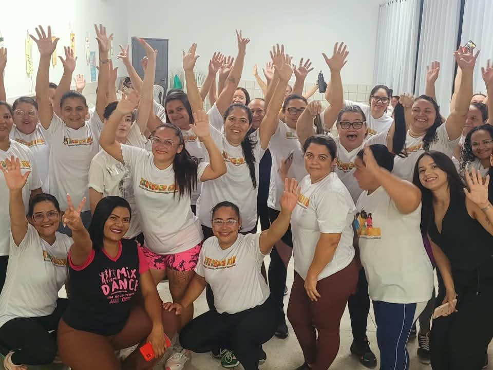
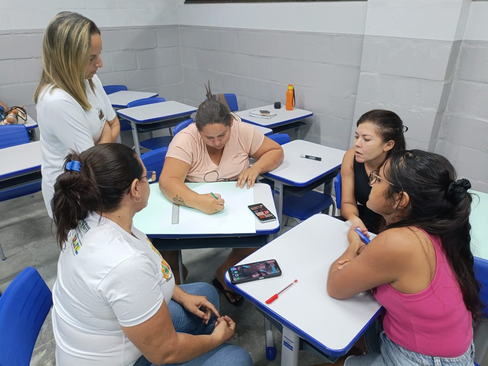
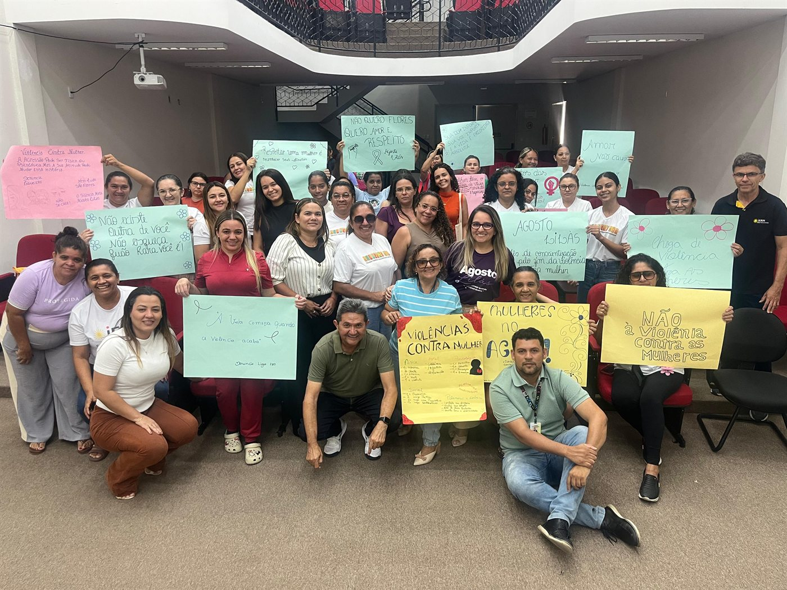
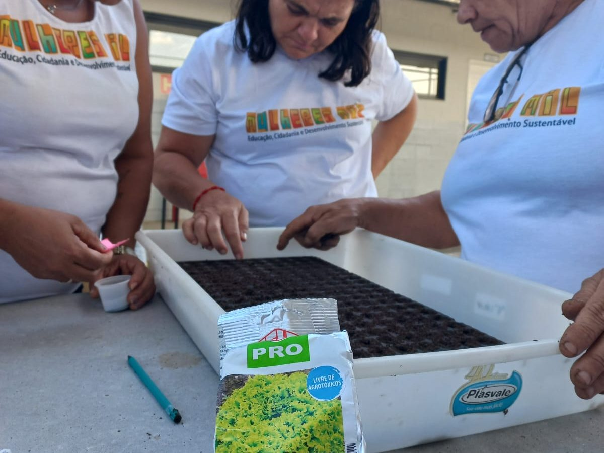
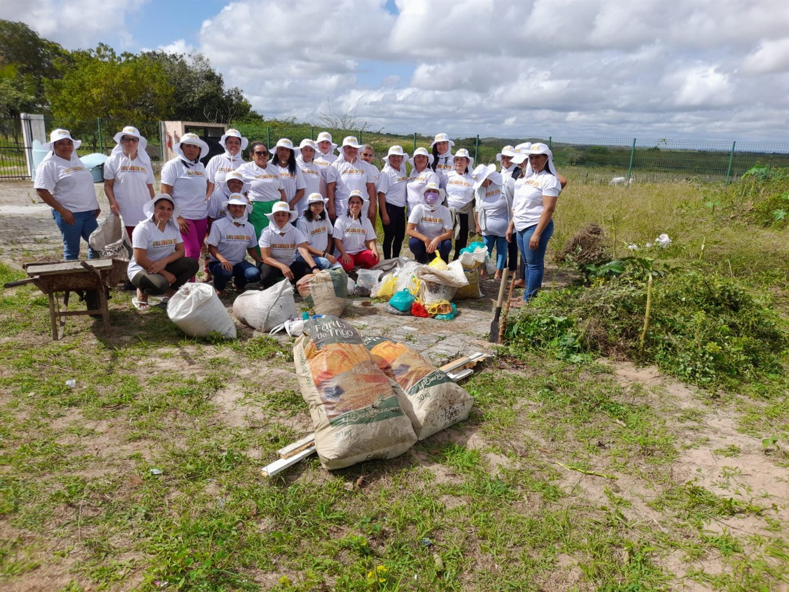
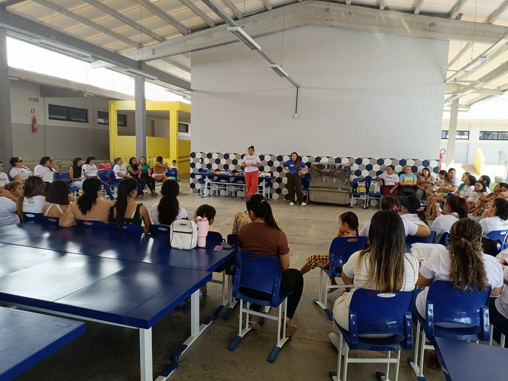
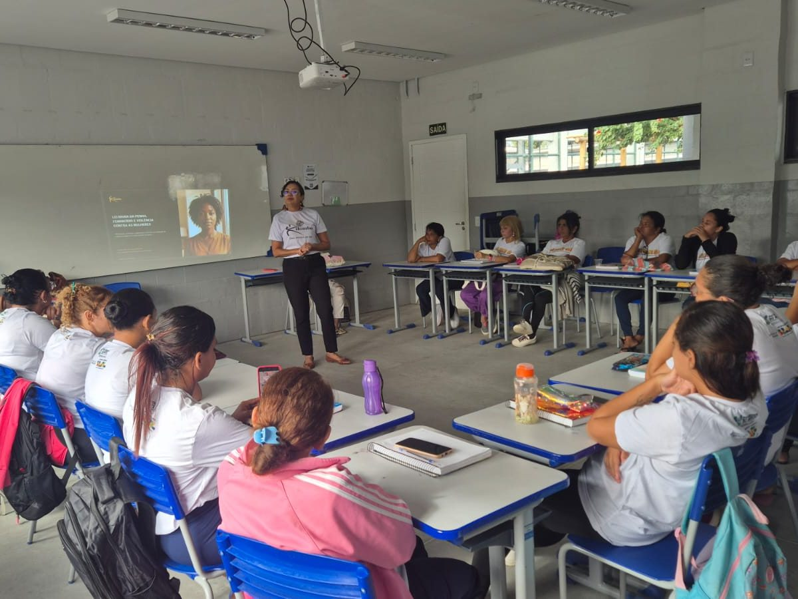
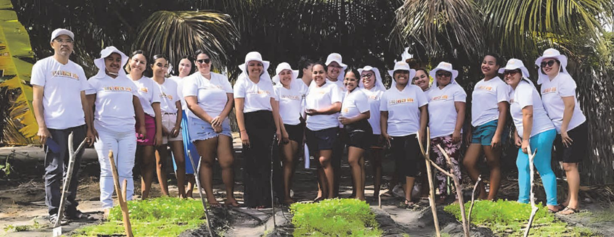
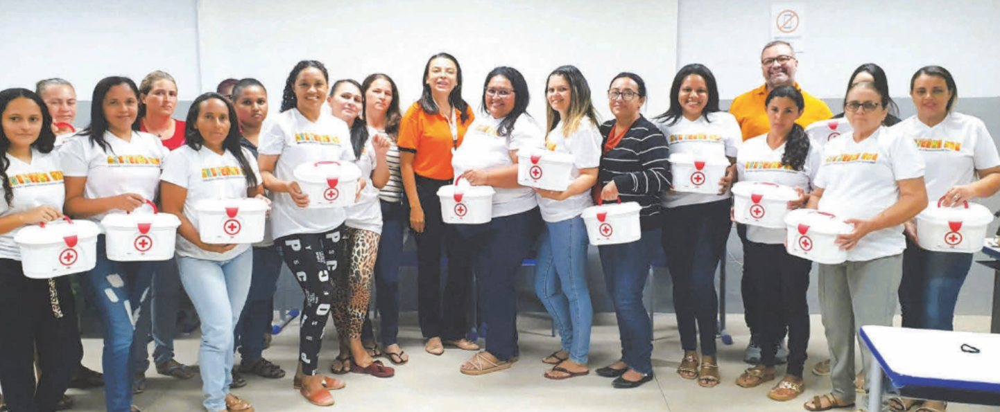
“O dinheirinho que recebi da bolsa do programa guardei para comprar algo para meus dois filhos. O curso me ajudou a comprar um computador para eles.”Rita de Cássia Gomes, agricultora de Almino Afonso e aluna de Horticultura Orgânica
Em 2026, o Pronatec abriu no RN 197 vagas em cursos de qualificação ligados ao meio ambiente e à energia, ofertados pelo IFRN: carregamento de veículos elétricos, em João Câmara e Parnamirim, e automação, em Natal.
É uma área que conversa com a rede estadual, que forma técnicos em Sistemas de Energia Renovável e em Eletrotécnica.
Conhecer o técnico em Sistemas de Energia Renovável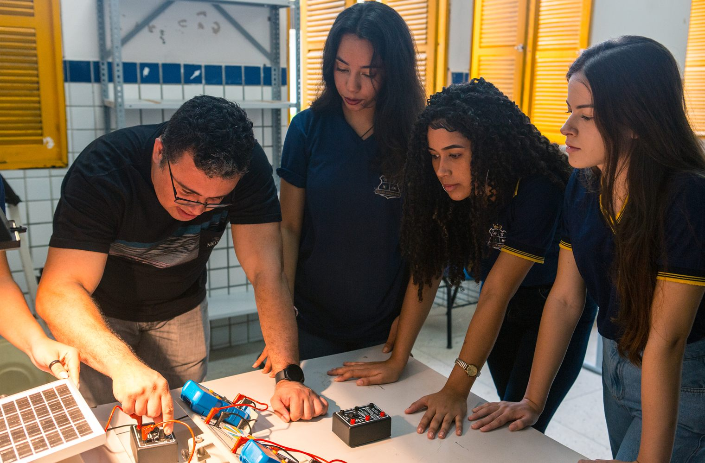
As vagas do Pronatec e do Mulheres Mil abrem ao longo do ano, em várias instituições. O caminho é o mesmo:
No Painel de Oportunidades do Pronatec, filtre pelo estado, pelo programa (como Mulheres Mil) e pelo mês.
Cada curso tem o edital da instituição que oferta: rede estadual, IFRN, UFRN ou Sistema S. Na rede estadual, as turmas do Mulheres Mil são organizadas com as prefeituras.
Idade, escolaridade, documentos e o público prioritário de cada curso.
A inscrição é feita nos canais da própria instituição, dentro do prazo do edital.
Não. Os cursos da Bolsa-Formação, inclusive os do Mulheres Mil, são gratuitos: o MEC paga a instituição ofertante.
Os cursos técnicos da rede estadual (integrado, EJATEC, concomitante e subsequente) são a oferta regular das escolas, CEEPs e IERNs. O Pronatec abre vagas pactuadas com o MEC, com editais próprios. A rede estadual faz as duas coisas: oferta os cursos técnicos e executa o Mulheres Mil. Para os cursos técnicos, veja Como entrar.
Não. O curso FIC dá certificado de qualificação profissional. O diploma de técnico de nível médio vem dos cursos técnicos, com pelo menos 800 horas.
O Mulheres Mil é voltado a mulheres. Para os demais públicos, há os cursos técnicos e FIC da Bolsa-Formação.
Sim. A Bolsa-Formação Estudante atende estudantes do ensino médio da rede pública, que fazem o curso técnico em outro turno. Na rede estadual, a forma concomitante funciona do mesmo jeito: veja as unidades que oferecem essa forma.
Fontes: Lei nº 12.513/2011; Portarias MEC nº 1.015/2011, nº 817/2015 e nº 725/2023; Ministério da Educação; Agência Gov (“Mulheres Mil oferta mais de 28,9 mil vagas em 2025”, maio de 2025); revista “Mulheres Mil RN”, 2ª edição (SEEC-RN, junho de 2026); Diário do RN (setembro de 2026).
São 18 cursos técnicos gratuitos, em 145 unidades e 80 municípios. Encontre a escola mais perto de você.